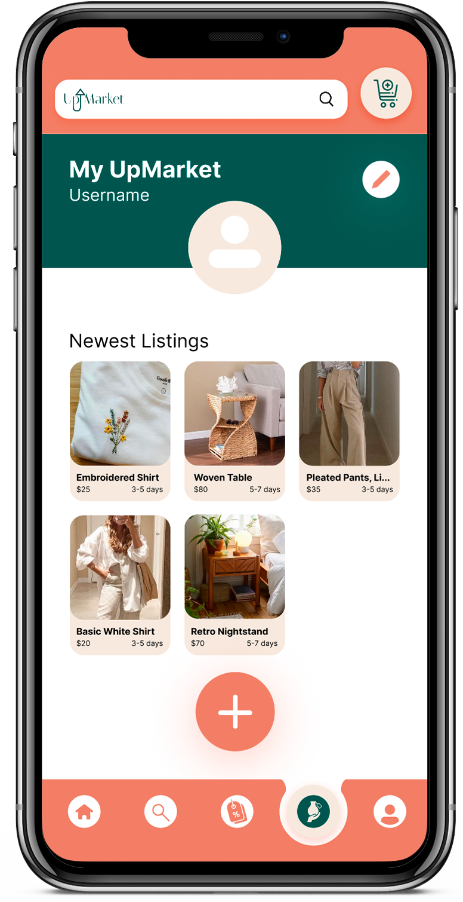
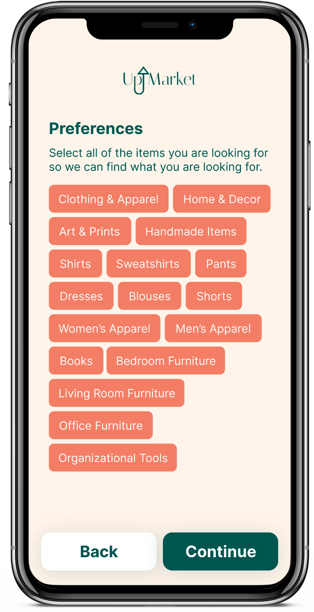
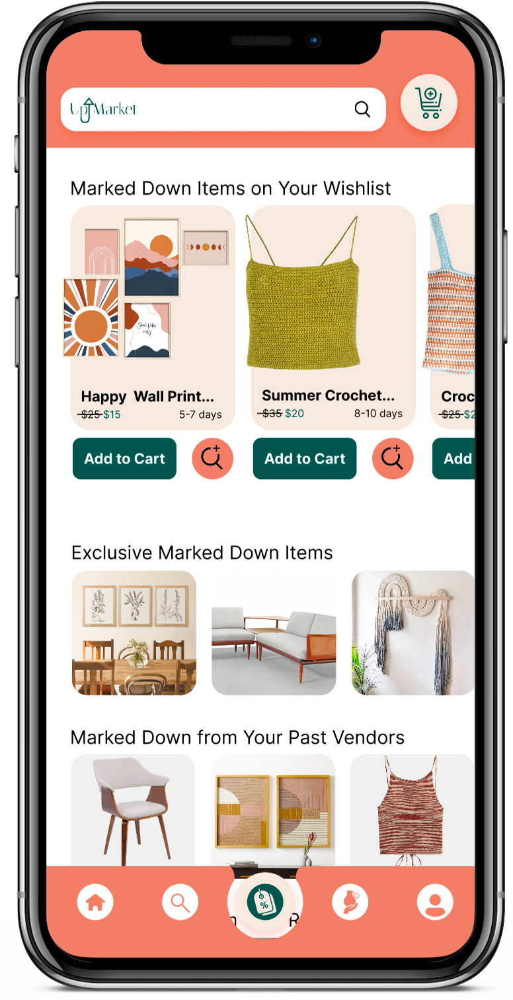

UI/UX Designer & Researcher
Ever felt bad how easy it is to be a consumer nowadays? Ever found a host of purchases that others may need? Only, it is hard to find a safe and reliable marketplace that allows users to sell their used goods with a significant breadth in types of merchandise sold. That marketplace is now available with UpMarket. With this prototype, users can easily find and sell secondgoods, which is better for their wallets and for the planet. Now, there is a place to digitally find unique and trendy finds while offsetting the environmental impact of firsthand purchases. It's time that we save our planet.
The global market of secondhand + resale apparel was worth $96 bn in 2021 (Statista)
The US secondhand market expected to grow 14.6% in 2022 to $160 bn (Mercari, “Reuse Report”)
Typically 50% cheaper than new merchandise + better for the environment (Vice)
TRADE OFFS: Limited lifespan, sometimes damaged, no warranty
ETSY + DEPOP
The former is missing: sustainability via secondhand goods,
tailorization of experience, easy to create a listing. The latter is missing: quality control, wide variety of listings, good information hierarchy, widely accepted consumer trust. This app bridges the gaps between these two businesses.
In order to benefit the environment the most, this app needs to make sure it casts its net large —both in terms of customers and in the number of secondhand goods. Therefore, it is necessary that users can put items for sale through an intuitive process.
In this app, creating a listing, or putting a product up for sale, is as easy as opening the market page and clicking the plus button at the bottom of the page.
Part of large-scale sustainability efforts, is to make sustainable solutions worth giving up less-sustainable practices. For this prototype, users should be able to find which features of the prototype they would like to experience. Whether a user sells old furniture or unused kitched utensils, tailorizing the app experience will help the marketplace fulfill each person's niche sustainability efforts. Tailorization will get users to ditch their less-sustainable practices and opt for the prototype's sustainable solutions.
All the ways this app tailorizes its experience can be seen to the left of this text.
Sometimes, deals are the sole reason why customers return to previous vendors. And, who can blame them? We all want to save a couple dollars. Or at least, that is one of the initial advantages people attribute to secondhand goods. In an effort to maintain this feature of secondhand goods, it's as easy to find a deal as a button on the menu bar.
This can be seen to the left of this text.
“Fodmap Food List.” IBS Diets, 2 Apr. 2021, https://www.ibsdiets.org/fodmap-diet/fodmap-food-list/.
Gunnars, Kris. “Mediterranean Diet 101: Meal Plan, Foods List, and Tips.” Healthline, Healthline Media, 25 Oct. 2021, https://www.healthline.com/nutrition/mediterranean-diet-meal-plan.
Cohen, E. (2004). “Myself as an Other: On Autoimmunity and ‘Other’ Paradoxes”. Medical Humanities, Vol. 30, pp. 7-11. https://womens-studies.rutgers.edu/images/stories/faculty/Myself_as_an_Other.pdf
Boynes-Shuck, Ashley. (2018). “Stress can be especially detrimental to those with autoimmune diseases”. Healthline. https://www.healthline.com/health-news/stress-can-be-especially-detrimental-to-those-wi th-autoimmune-diseases
Krans, Brian. “FODMAP Diet Can Help People with IBD.” Healthline, Healthline Media, 4 Oct. 2019, https://www.healthline.com/health-news/low-carbohydrate-diet-helps-with-ibd.
Powered by GitHub,
Coded by Daisy Bell